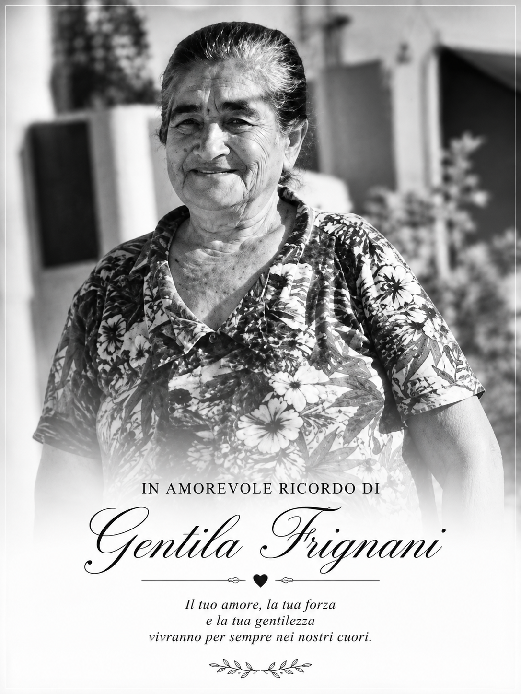

A family legacy,
shared with the world.
FRIGNANI'S is an international trade maison based in Luxembourg, with authentic Italian origins and identity — connecting prestigious Italian producers and European partners directly to international professionals.
Three Pillars of Excellence Serving Demanding Markets
We operate across three core pillars: Wines & Beverages, Italian Gastronomy (Food Italy), and Tableware & Lifestyle (Kitchen & Art de Vivre), serving restaurants, luxury hotels, premium supermarkets, and casinos in Europe and the Americas.
Headquartered in the Grand Duchy of Luxembourg, we connect Italian producers and European artisans directly to international professionals, without superfluous intermediaries and with complete operational security.
« Our approach: curatorship over volume, relationship over transaction. »

« Your love, your strength, and your kindness will live forever in our hearts. »
✦ FRIGNANI'S · EST. TRENTO · ITALIA ✦Century-Old Roots, Tradition and Family Passion
Sabrina Frignani, founder of FRIGNANI'S, is of Italian descent, with deep family roots in Trento — a historical territory that was once part of the Austro-Hungarian Empire before becoming Italian. This rich cultural heritage transmitted to the Frignani family the secrets and sacred rituals of authentic gastronomy.
Trento, Italy
Land of origin of the Frignani family — at the time, part of the Austro-Hungarian Empire. The cradle of a lineage marked by deep respect for the land, harvest traditions, and authentic flavours.
A Century-Old Promise
Over a century ago, a ship crossed the Atlantic. Aboard: an Italian family, its sacred traditions, and the promise to bring the authentic flavours of Italy across borders.
European Hub & Global Vision
Today established in the Grand Duchy of Luxembourg, Sabrina perpetuates this family heritage. In honour of her roots and her grandmother, she connects Italian excellence with discerning professionals worldwide.
« Frignani's : Una passione, mille sapori. »
Mission, Vision & Values
The core principles guiding FRIGNANI'S in building enduring trade bridges between Italy, Europe, and the world.
Mission
Deliver authentic, high-prestige Italian products and wines from historical terroirs directly to the world's finest dining and hospitality establishments.
Vision
Become the benchmark boutique maison for Italian culinary curatorship and fine wine trade across Luxembourg, Europe, and international markets.
Values
Excellence, uncompromising authenticity, mutual trust, and enduring direct partnerships with each producer and client.
Our Differentials
Why discerning hospitality groups and fine food retailers choose FRIGNANI'S over commodity distributors.
Exclusive Curatorship
Meticulous selection of prestigious family estates — never anonymous mass catalogs. Every reference carries authentic pedigree and uncompromising quality.
Direct Relationship
A single, dedicated, and accessible point of contact — from initial tasting and custom selection to seamless ongoing fulfillment.
Agility & Bespoke Solutions
Lean and responsive structure: swift decisions, immediate communication, and tailor-made logistics suited to your enterprise.
Family Storytelling
The authentic narrative of an Italian family heritage, bringing emotional depth and tangible prestige to your wine list and discerning patrons.
Selection Tiers & Terroirs
A structured curation categorized by gastronomic profile and quality standards, crafted for sommeliers, chefs, and luxury hospitality managers.
Sparkling & Premium Prosecco
Valdobbiadene & FranciacortaIdeal for by-the-glass service and refined lists. Vibrant freshness, fine perlage, and accessible luxury for aperitifs and high-profile receptions.
Classic Selection Wines
Mid-High Gastronomic RangeSuperb quality-to-value ratio, crafted to compose a balanced and harmonious list (white, red, and rosé) for distinguished culinary tables.
High Range & Exceptional Terroirs
Toscana, Piemonte & Noble CrusHistoric and family prestige. Exceptional crus designed for fine dining establishments, exclusive private cellars, and discerning collectors.
Let's Build a Direct and Lasting Partnership
Sabrina Frignani is at your disposal to present our curated portfolio of wines, olive oils, and luxury articles for your business.